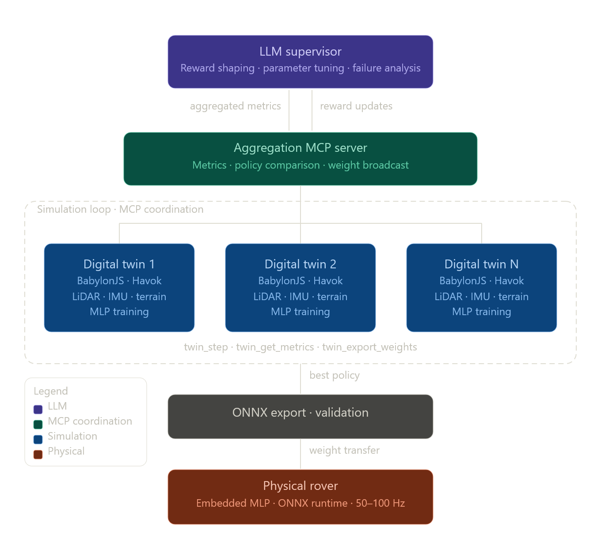

Digital twins run in parallel inside a Babylon.js simulation. Each twin has its own sensor stack (LiDAR, stereo, IMU, wheels) feeding a cascaded MLP brain. An LLM supervisor coordinates training via MCP, and the best policy is exported to the physical rover.

The depth-to-action pipeline is a configurable compute graph. Swap between LiDAR-only, stereo + classical matching, stereo + learned MatchingCortex, or fused — all at runtime.
Compresses LiDAR/stereo depth + IMU into 8 learned environment features.
Maps features + pose + slip + goal to steering, throttle, brake, risk.
Learned stereo matcher — replaces BM/SGM with a trained MLP per grid cell.
Visualize a simulated LiDAR scan from the depth pipeline with convolution pooling.
Compare stereo matching (BM vs MatchingCortex) on synthetic scenarios.
Run the full perception → decision cascade on random obstacle layouts.
Watch the PerceptCortex train live — loss curves, per-feature MSE, weight visualization.
Build and run custom pipeline configurations — swap depth sources at runtime.
6-wheel differential odometry with slip detection and N-wheel averaging.